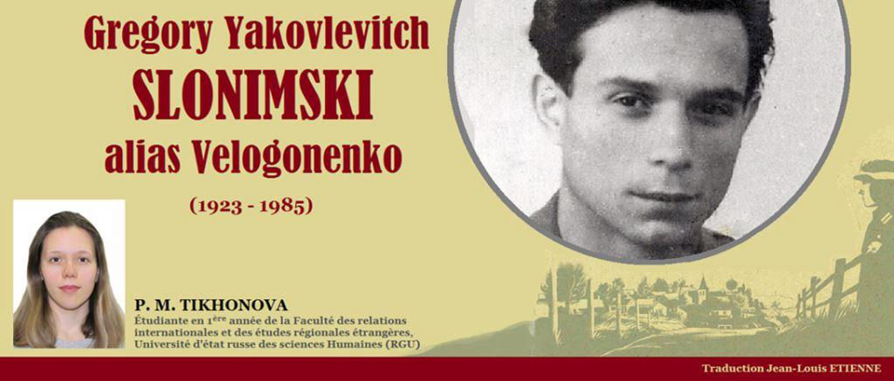
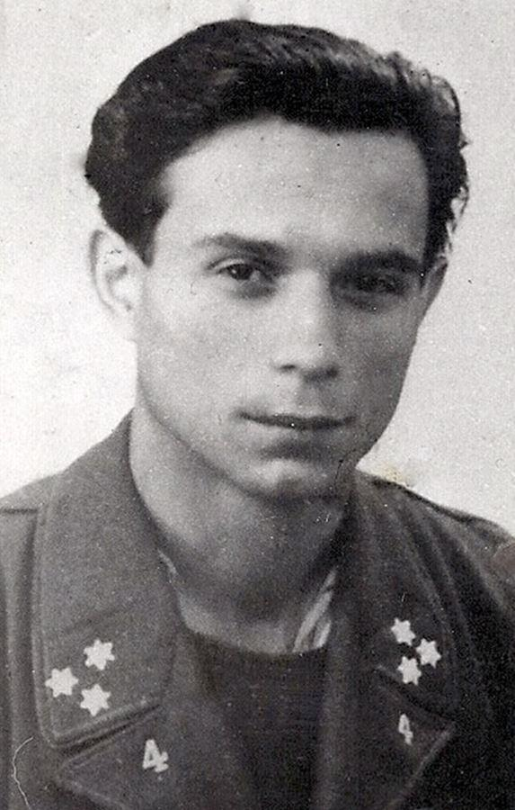
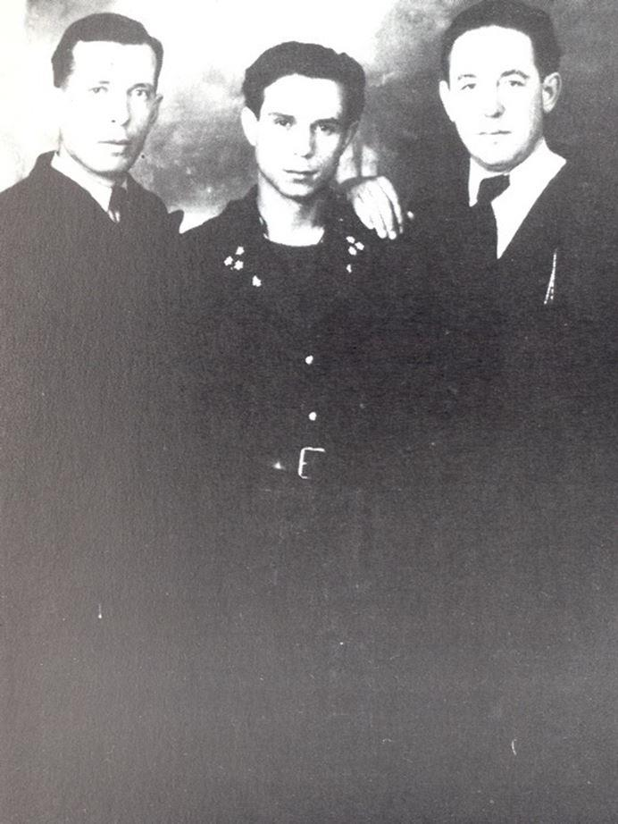
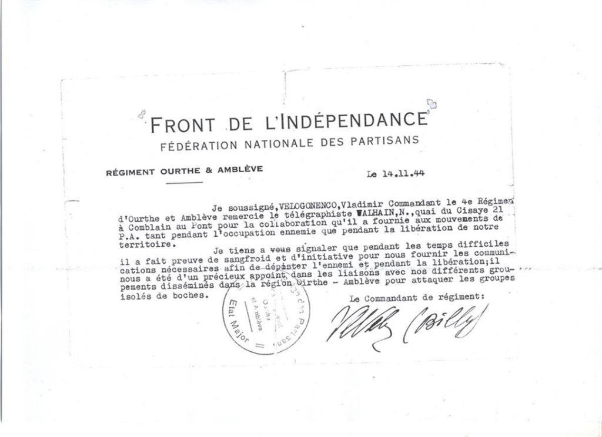

Gregory Yakovlevitch Slonimski alias Velogonenko (1923-1985)
par P. M. TIKHONOVA

La seconde guerre mondiale est une tragédie qui a laissé une marque sanglante dans notre histoire. Nous sommes fiers d'honorer la mémoire des héros de la guerre. Cependant, peu d'entre eux se sont retrouvés à l'avant-scène lors des honneurs. Certains Héros qui se sont battus pour la libération de l'Europe et qui ont versé leur sang sont restés dans l'ombre. Mais le temps remet tout en place, les histoires sur l'héroïsme des soldats soviétiques trouvent leurs lecteurs.
La première année de la guerre avec les fascistes a été la plus difficile pour l'armée soviétique, dont une partie était composée de très jeunes soldats venus au front du banc de l'école. Ainsi, Grisha Slonimsky, 18 ans, vivait dans la paisible ville de Dniepropetrovsk. Avant de se rendre à la frontière, il a réussi à suivre des cours de trois semaines pour former des officiers politiques. Le jeune Gregory a combattu dans le bataillon Communiste n°1 de Dnepropetrovsk et dans le 70e régiment d'artillerie de la garde. Au cours des deux premières années de guerre, il a s’est battu dans les steppes d'Odessa, de se traverser Kakhovka à feu et à sang et de participer à de violents combats près de Kharkov. Au cours de ces batailles, il a acquis une expérience précieuse qui lui a été utile par la suite.
Au printemps 1942, lors de la deuxième bataille de Kharkov, le régiment où Gregory servait a été encerclé. Les officiers ont décidé de se frayer un chemin, des groupes d'assaut spéciaux ont été formés pour ce projet.
Slonimsky commandait l'un de ces groupes, lequel a été décimé et Gregory lui-même, étourdi par l’éclat d’obus, a capturé dans un état grave.
Tout d'abord envoyé au camp de transit de Jytomir, Gregory décide de prendre le nom de son camarade de classe – Velogonenko. Cela lui a sauvé la vie, car les nazis effectuaient un « nettoyage », éliminant les communistes et les Juifs.
Après Jitomir, il fut déporté dans des camps de concentration en Ukraine et en Pologne. À l'approche de 1943, l'Allemagne a ressenti le besoin de travailleurs dans les Mines de charbon, de sorte que les citoyens soviétiques ont commencé à être emmenés en masse à Dortmund et en Belgique. Dans l'un de ces trains en provenance du camp polonais, Gregory attendait le moment opportun pour s’évader. Le trajet en train était une bonne occasion, il ne restait plus qu'à profiter de la situation.
Gregory a réussi à enporter un couteau avec lequel il a fait un trou dans la planche d'un wagon de marchandises transportant des prisonniers. Cependant, malgré la possibilité de recouvrer la liberté, ses compagnons n’ont pas décidé de sauter du train en marche. Gregory était le seul à s'échapper.
Il avait d'abord prévu de se rendre en France et de rejoindre le mouvement de Résistance. Plus tard, Gregory a mûri un plan pour se rendre à la Mer du Nord, et de là au Royaume-Uni. Pendant trois semaines, Grisha a parcouru les forêts pour trouver de la nourriture dans les fermes jusqu'à ce qu'un jour il entende un ordre de lever les mains. Devant Grisha se tenait un homme avec un fusil. Heureusement, il s'agissait d'un forestier belge, communiste et membre du mouvement de Résistance. Gregory a cherché à recommencer la lutte contre l'Allemagne fasciste, a rejoint les rangs du mouvement de guérilla. Le forestier l'a dirigé vers l'une des zones stratégiques les plus importantes des Ardennes, la vallée formée par les rivières Ourthe et Amblève.
Il était difficile de se battre – il manquait d’armes et de munitions. La Grande-Bretagne alliée n'a fourni d'armes qu'aux unités spéciales, les unités de partisans ne l'étaient pas. Peu à peu, le détachement est devenu un véritable régiment, dont le commandant a été nommé par le communiste belge Jean-François Collard1. La bravoure et le courage du régiment étaient connus bien au-delà des Ardennes. Le gouvernement nazi en Belgique décida d'envoyer des commandos de représailles dans la région. Cette période fut la plus difficile et la plus sanglante pour les partisans. De nombreux camarades de Gregory sont morts, parmi eux se trouvaient Evgeny Dotsenko et Jean-François Collard. Cependant, l’ennemi craignait de s’aventurer dans les collines et très vite, les partisans ont acquis l'avantage et la possibilité de se battre contre les nazis.
Quelque temps plus tard, Gregory reçoit sous son commandement un bataillon international, plus tard transformé en 4e Régiment des Partisans Armés du Front de l’Indépendance. Le groupe justifiait pleinement son nom non officiel, car dans ses rangs se battaient côte à côte les belges, les néerlandais, les ukrainiens et les russes: Evgeny Dotsenko, Gregory Lizogubenko, Ivan Palchikov et Vasily Lipatov, etc.
Le groupe sous commandement de Gregory Yakovlevich a activement effectué des raids sur les garnisons et de l'ennemi. Le Comité du parti communiste belge a noté le succès du bataillon et a nommé Gregory Slonimsky au poste de commandant du 4e régiment.
Les régiments de partisans dans les Ardennes ont joué un rôle des plus important dans la libération de la Belgique : de nombreuses régions rurales ont été libérées avant même l'arrivée des Alliés. Ainsi, pendant les hostilités, plus de soldats ennemis 750 ont été mis hors de combat, trois convois militaires ont été détruit ainsi que plus de 200 wagons. Le nombre de sabotages effectués est incalculable. Une grande partie des Ardennes étaient contrôlée par les partisans et le 4e régiment de Gregory Slonimski, quelques jours avant l'arrivée des Alliés, avait réussit à libérer la vallée de l'Ourthe-Amblève.
Les compagnons d'armes ont conservé la mémoires des partisans des décennies durant. Ils ont soigneusement gardé les lettres et les photos des années de guerre. Ainsi, Gregory Slonimsky a conservé une photo avec la légende: « Billy, te reconnais-tu il y a trente ans à Comblain-au-Pont que tu as aidé à sauver quand les nazis ont voulu tout détruire ici? Il reste encore des gens qui n'ont pas oublié ce que tu as fait pour eux. Albert». Les amis belges fidèles ont apprécié ce que ce simple Soviétique avait fait pour libérer leur patrie et ont soigneusement gardé le souvenir des années passées à leurs côtés.
Gregory Slonimski est devenu un véritable héros en Belgique. Pour sa contribution à la défaite des nazis, il a reçu la médaille «pour le courage», des médailles jubilaires, et a également eu plusieurs récompenses belges supérieures. Plus d'une fois, Gregory a été invité à des réunions d'anciens combattants en Belgique et en France.
Nous ne devons pas oublier les exploits du peuple soviétique sur le territoire de l'Europe occupée. Leur désir de liberté et de paix a aidé de nombreux États à retrouver leur indépendance et leur tranquillité. Ces gens seront vivants tant que leur mémoire sera vivante.
P.M.T.
NOTES ET REMARQUES
1. Jean(-François) Collard (1923-1944). Commandant du 4e Régiment des Partisans Armés du Front de l’Indépendance d’Ourthe et Amblève. Il se fait sauter avec une grenade plutôt que de se rendre (n.d.t.).
2. L'article est écrit sur les matériaux de l'article de L. Zalat "Embuscade dans les Ardennes (Л. Залата Засада в Арденнах // Комсомольская правда 1975. № 90" de 1975 , les travaux de A. V. Kudritsky de 1967 (А.В. Кудрицкий Трудящиеся советской Украины в антифашистском движении Сопротивления народов западной Европы (Франция, Бельгия, Италия)1942-1945 // Автореферат дис. на соискание ученой степени кандидата исторических наук / АН УССР. Ин-т истории. Киев. 1967 г).
Partager cette page